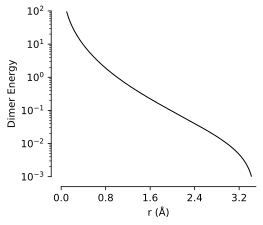

Pair Potentials¶
Base Class¶
- class graph_pes.models.PairPotential(cutoff)[source]¶
Bases:
GraphPESModel,ABCAn abstract base class for PES models that calculate total energy as a sum over pairwise interactions:
\[E = \sum_{i, j} V(r_{ij}, Z_i, Z_j)\]where \(r_{ij}\) is the distance between atoms \(i\) and \(j\), and \(Z_i\) and \(Z_j\) are their atomic numbers. This can be recast as a sum over local energy contributions, \(E = \sum_i \varepsilon_i\), according to:
\[\varepsilon_i = \frac{1}{2} \sum_j V(r_{ij}, Z_i, Z_j)\]Subclasses should implement
interaction().
Available Pair Potentials¶
- class graph_pes.models.LennardJones(cutoff=5.0, epsilon=0.1, sigma=1.0, shift=False)[source]¶
Bases:
PairPotentialA pair potential with an interaction term of the form:
\[V_{LJ}(r) = 4 \varepsilon \left[ \left( \frac{\sigma}{r} \right)^{12} - \left( \frac{\sigma}{r} \right)^{6} \right]\]where \(r_{ij}\) is the distance between atoms \(i\) and \(j\), and \(\varepsilon\) and \(\sigma\) are strictly positive paramters that control the depth and width of the potential well.
To ensure a continous energy surface, the final interaction is shifted by the value of the potential at the cutoff to remove the discontinuity:
\[V(r) = V_{LJ}(r) - V_{LJ}(r_c)\]Warning
The derivative of the potential is not continuous at the cutoff, irrespective of whether the potential is shifted or not. This leads to discontinuities in this models’s forces. Consider wrapping this potential in
SmoothedPairPotentialto obtain a smooth and continuous potential and force field.- Parameters:
Example
from graph_pes.utils.analysis import dimer_curve from graph_pes.models import LennardJones dimer_curve(LennardJones(), system="H2", rmax=3.5)
- static from_ase(
- sigma=1.0,
- epsilon=1.0,
- rc=None,
- ro=None,
- smooth=False,
Create a
LennardJonespotential with an interface identical to the ASEase.calculators.lj.LennardJonescalculator.Please refer to the ASE documentation for more details.
- class graph_pes.models.ZBLCoreRepulsion(cutoff=5.0, trainable=False)[source]¶
Bases:
PairPotentialThe ZBL repulsive potential:
\[V(r, Z_i, Z_j) = \frac{e^2}{4 \pi \epsilon_0} \cdot \frac{Z_i Z_j}{r} \cdot \phi(r / a)\]where \(\phi(x)\) is a dimensionless function given by:
\[\phi(x) = 0.1818e^{-3.2x} + 0.5099e^{-0.9423x} + 0.2802e^{-0.4029x} + 0.02817e^{-0.2016x}\]and \(a\) is the screening length:
\[a = \frac{\lambda_p \cdot a_0}{Z_i^{\lambda_e} + Z_j^{\lambda_e}}\]where \(a_0\) is the Bohr radius, \(\lambda_p = 0.8854\) and \(\lambda_e = 0.23\).
- Parameters:
Example
import matplotlib.pyplot as plt from graph_pes.utils.analysis import dimer_curve from graph_pes.models import ZBL dimer_curve(ZBL(), system="H2", rmin=0.1, rmax=3.5) plt.xlim(0, 3.5) plt.ylim(0.01, 100) plt.yscale("log")

- class graph_pes.models.Morse(cutoff=5.0, D=0.1, a=5.0, r0=1.5)[source]¶
Bases:
PairPotentialA pair potential of the form:
\[V(r_{ij}, Z_i, Z_j) = V(r_{ij}) = D (1 - e^{-a(r_{ij} - r_0)})^2\]where \(r_{ij}\) is the distance between atoms \(i\) and \(j\), and \(D\), \(a\) and \(r_0\) are strictly positive parameters that control the depth, width and center of the potential well respectively.
- Parameters:
Example
from graph_pes.utils.analysis import dimer_curve from graph_pes.models import Morse dimer_curve(Morse(), system="H2", rmax=3.5)
- class graph_pes.models.LennardJonesMixture(cutoff=5.0, modulate_distances=True)[source]¶
Bases:
PairPotentialAn extension of the simple
LennardJonespotential to account for multiple atomic species.Each element is associated with a unique pair of parameters, $sigma_i$ and $varepsilon_i$, which control the width and depth of the potential well for that element.
Interactions between atoms of different elements are calculated using effective parameters \(\sigma_{i\neq j}\) and \(\varepsilon_{i \neq j}\), which are calculated as:
\(\sigma_{i\neq j} = \nu_{ij} \cdot (\sigma_i + \sigma_j) / 2\)
\(\varepsilon_{i\neq j} = \zeta_{ij} \cdot \sqrt{\varepsilon_i \cdot \varepsilon_j}\)
where \(\nu_{ij}\) is a mixing parameter that controls the width of the potential well.
For more details, see wikipedia.
- class graph_pes.models.SmoothedPairPotential(potential, smoothing_onset=None)[source]¶
Bases:
PairPotentialA wrapper around a
PairPotentialthat applies a smooth cutoff function, \(f\) =SmoothOnsetEnvelope, to the potential to ensure a continous energy surface:\[V(r) = f(r, r_o, r_c) \cdot V_{\text{wrapped}}(r)\]where
\[\begin{split}f(r, r_o, r_c) = \begin{cases} \hfill 1 \hfill & \text{if } r < r_o \\ \frac{(r_c - r)^2 (r_c + 2r - 3r_o)}{(r_c - r_o)^3} & \text{if } r_o \leq r < r_c \\ \hfill 0 \hfill & \text{if } r \geq r_c \end{cases}\end{split}\]and \(r_o\) and \(r_c\) are the onset and cutoff radii respectively.
- Parameters:
potential (PairPotential) – The potential to wrap.
smoothing_onset (float | None) – The radius at which the smooth cutoff function begins. Defaults to \(2r_c / 3\).